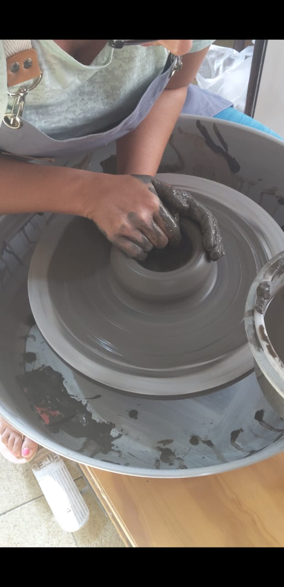
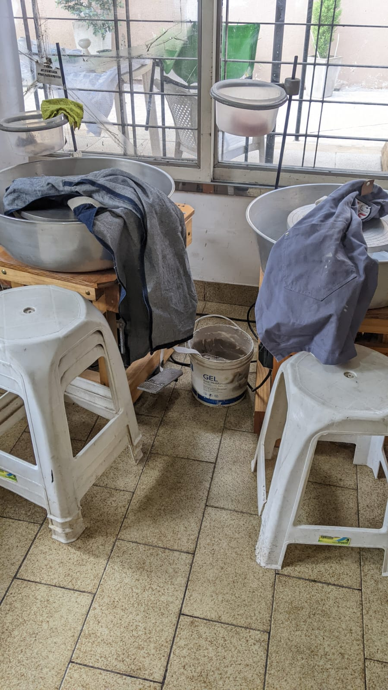
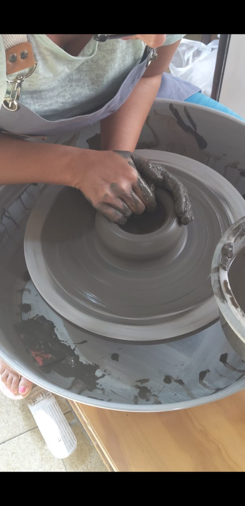
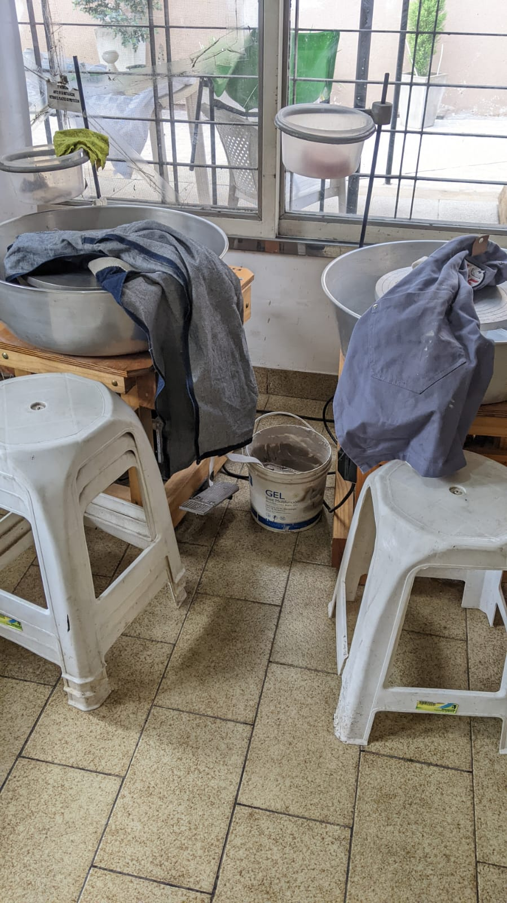

Te explicamos como trabajamos y que herramientas usamos.
Los alfareros ceramistas usan una combinación de herramientas manuales y automáticas para realizar los productos de cerámica. Las herramientas manuales tradicionales se siguen utilizando mucho, pues son el método más eficaz. De todos modos, a menudo se emplean también herramientas automatizadas porque aceleran el proceso. A continuación explicamos cómo se realizan algunos productos de cerámica: El proceso tradicional de fabricación más común es tornear una vasija. El alfarero pone en un torno una pella de arcilla previamente amasada. El moldeado se consigue con la mano y la velocidad del torno, controlada por un pedal. Para facilitar el proceso de modelado se utiliza agua. Una vez el artículo se ha secado y se le ha aplicado un acabado, se cuece en un horno para hacerlo más fuerte. El torneado con plantilla exterior (jiggering) es un proceso mecanizado que se utiliza para hacer platos y recipientes planos, como los platitos para las tazas. Se aplana la arcilla con una delgada espátula metálica para formar un “disco” del espesor requerido. Se retira entonces el disco y se pone en un molde de yeso giratorio. A continuación, se pulveriza o bien se humedece a mano y se le pone encima una perfiladora metálica para darle forma. El torneado con plantilla exterior (jolleying) es un proceso mecanizado que se utiliza para hacer utensilios como boles de sopa. Se pone la arcilla en un molde giratorio, que luego se quita levantándolo cuidadosamente por los lados con las manos. Entonces se da forma a la arcilla moldeada con una perfiladora y se coloca a continuación en un armario de secado. El torneado es un proceso de acabado en el que el tornero usa un torno, donde se ha colocado la pieza. Se da forma a la arcilla a mano o utilizando herramientas automáticas. Para completar la pieza cerámica, se añaden el color y otros efectos decorativos. Se puede hacer un molde de la pieza para poder realizar copias exactas. Durante este proceso, se vierte en los moldes arcilla líquida, o barbotina. El exceso de humedad se absorbe dejando dentro una capa de arcilla. Las piezas pueden moldearse por secciones, que el moldeador unirá usando barbotina como agente de unión. Además de para realizar las piezas de cerámica más tradicionales, la arcilla se utiliza para elaborar muchos otros artículos, como ladrillos, tejas y cañerías. También se utiliza ampliamente en la fabricación de productos de alta tecnología, como ordenadores, motores a reacción y láseres.
 


